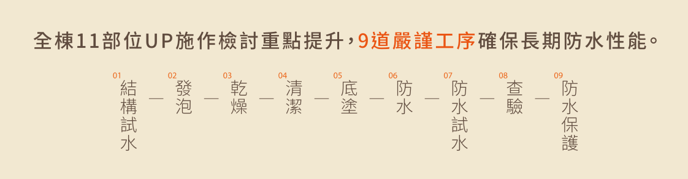

工程細節
施工特色
- 屋頂防水
- RC結構
- 三級品管
- 窗框防水
- 穿樑補強
- 亞洲水泥
- 浴室防水
- 窗框補強
- 東和鋼鐵
- 陽台防水
- 樑柱交接
- 泰固美特耐
- 外牆防水
- 鋼筋綁紮+續接器
- 層縫防水
- BIM建築模型

工程細節
防水施工前進行結構體24小時試水，確認無誤方可進行防水工程。
於頂樓（女兒牆）內面之防水，採用泛水設計一體成形，並進行第二階段試水72小時以上，可有效避免雨水滲透防水層，確保雨季來臨時也能有效隔絕雨水滲漏問題。
防水施工前進行結構體24小時試水，確認無誤方可進行防水工程。
於頂樓（女兒牆）內面之防水，採用泛水設計一體成形，並進行第二階段試水72小時以上，可有效避免雨水滲透防水層，確保雨季來臨時也能有效隔絕雨水滲漏問題。
外牆結構體完成。組立窗框完成並嵌縫後，
高分子壓克力滲透底漆施作，
高分子彈性水泥塗佈45度角50cm一次。

外牆結構體完成。組立窗框完成並嵌縫後，
高分子壓克力滲透底漆施作，
高分子彈性水泥塗佈45度角50cm一次。

二道高分子彈性複合材塗佈，
延窗框周圍寬30cm（角隅處延伸50cm）。
並於剪力角增加施做玻纖抗裂網材，
確保長期防水效果。
鋪貼牆磚且於窗框與外牆磚接縫處理填充矽利康收邊，確保氣密與水密度。
鋪貼牆磚且於窗框與外牆磚接縫處理填充矽利康收邊，確保氣密與水密度。
施以素地整理，清除表面凸出物、沙粒及雜質，使表面平整。
以水泥砂漿倒滾圓補強填滿陰角縫隙。
使用防水材塗佈，(水泥砂漿+壓克力樹酯)，全室均一高度240cm。
防水完成後，48小時試水確認無滲漏現象後，即可鋪設磁磚面材與安裝衛浴建材。
鋪設磁磚面材與安裝衛浴建材。
陽台出現積水雖然是個小問題，但也讓人氣惱，陽台會出現積水現象，最主要的原因是因為洩水設計或施工品質不良，導致地面凹陷而排水不良。
陽台出現積水雖然是個小問題，但也讓人氣惱，陽台會出現積水現象，最主要的原因是因為洩水設計或施工品質不良，導致地面凹陷而排水不良。
陽台出現積水雖然是個小問題，但也讓人氣惱，陽台會出現積水現象，最主要的原因是因為洩水設計或施工品質不良，導致地面凹陷而排水不良。
陽台出現積水雖然是個小問題，但也讓人氣惱，陽台會出現積水現象，最主要的原因是因為洩水設計或施工品質不良，導致地面凹陷而排水不良。
陽台出現積水雖然是個小問題，但也讓人氣惱，陽台會出現積水現象，最主要的原因是因為洩水設計或施工品質不良，導致地面凹陷而排水不良。
外牆粉刷工程進場施作前，於外牆樓層間及露樑層間接縫處先打除雜物後，並將接縫及樑頂部清洗乾淨後，施作第一道防水矽漿填縫結構體表面再塗抹第二道防水層，並施作洩水坡度處理，再進行後續泥作粉刷及外牆面材工程，有效防止外牆漏水現象。
外牆粉刷工程進場施作前，於外牆樓層間及露樑層間接縫處先打除雜物後，並將接縫及樑頂部清洗乾淨後，施作第一道防水矽漿填縫結構體表面再塗抹第二道防水層，並施作洩水坡度處理，再進行後續泥作粉刷及外牆面材工程，有效防止外牆漏水現象。
外牆粉刷工程進場施作前，於外牆樓層間及露樑層間接縫處先打除雜物後，並將接縫及樑頂部清洗乾淨後，施作第一道防水矽漿填縫結構體表面再塗抹第二道防水層，並施作洩水坡度處理，再進行後續泥作粉刷及外牆面材工程，有效防止外牆漏水現象。
外牆粉刷工程進場施作前，於外牆樓層間及露樑層間接縫處先打除雜物後，並將接縫及樑頂部清洗乾淨後，施作第一道防水矽漿填縫結構體表面再塗抹第二道防水層，並施作洩水坡度處理，再進行後續泥作粉刷及外牆面材工程，有效防止外牆漏水現象。
外牆粉刷工程進場施作前，於外牆樓層間及露樑層間接縫處先打除雜物後，並將接縫及樑頂部清洗乾淨後，施作第一道防水矽漿填縫結構體表面再塗抹第二道防水層，並施作洩水坡度處理，再進行後續泥作粉刷及外牆面材工程，有效防止外牆漏水現象。
RC即鋼筋混凝土建築（Reinforced Concerte），是目前業界技術最成熟的建築結構，因此施工程序標準化，可達成品質最佳控制。RC造築具備剛性優勢，地震來襲時之搖晃位移量較小，創造了極佳的防火性能與隔音特質。
本案於樑柱交接處皆提高樑箍筋排列密度，
強化樑柱交界處之整體結構，br
增加建築物抗震能力，讓您住得更加安心。
於門窗開口處施作45度角斜筋綁紮，
抵抗角落應力集中，增加結構強度，
防止破壞、龜裂。
本案於樑柱交接處皆提高樑箍筋排列密度，強化樑柱交界處之整體結構，增加建築物抗震能力，讓您住得更加安心。
一般鋼筋出廠長度僅約12~16公尺，除非進行搭接或續接，才能使柱主筋持續延長，否則無法營造高樓建築。
傳統的鋼筋搭接工法，常造成鋼筋太密、間距不足，使得鋼筋握裹力無法發揮，有影響結構安全之疑慮。
為此，本案的柱主筋一律採用等級最高之“SA級摩擦焊接續接器”，取代傳統搭接工法，在施工上更為精準確實，也有較好之延展性及韌性，可提升結構之耐震性能。
在相鄰主筋續接位置依規定皆錯開60cm以上，以避免結構弱面集中於同一區域之情形，杜絕強震時鋼筋瞬間拉壞之可能性。
鋼筋採用閉合箍筋且要求兩端均為135度+135度循環箍筋綁紮，以每層、四角落交錯綁紮方式配置，形成耐震彎鉤，減少集中應力與結構弱點的產生，確保強震時柱箍筋能確實圍束柱體。
本案繫筋彎鉤以90度+135度施⼯，提高結構圍束強度，降低建築物因地震而造成的破壞。
一般鋼筋出廠長度僅約12~16公尺，除非進行搭接或續接，才能使柱主筋持續延長，否則無法營造高樓建築。
樑柱接頭是框架式結構最重要的結構部件。以RC構造來說，樑柱接頭處的鋼筋綁紮可說是攸關整體結構安全最重要的部位之一。
為加強柱主筋的圍束力，提升抗壓強度，所以需要搭配箍筋與繫筋的設計，將所有柱主筋緊緊牢固在一起。
梁柱接頭處，絕對嚴格要求之柱箍筋均依結構混凝土規範中耐震設計之規定，採緊密箍筋配置；其間距必須≦10cm，以確保梁柱接頭之韌性。
且柱箍筋於應力較大之圍束區範圍內，亦採用10cm間距之箍筋，提升柱之耐震能力。
在以往的營建工程中，機電管路工程與土建工程往往因為工序的流程，常會發生施工介面的問題：工程進度進展到了某種程度時，才發現管路過不去或是土建忘了預留管道間開口的類似狀況。
本案利用BIM系統，在施工前預先檢討個案中的五大管路(電器、弱電、給水、排水、瓦斯)，避免在工程中浪費過多的時間及耗材修整，管道分明更有利於日後維修，縮減找管路的問題。
亞東預拌已優先取得BSI組織型溫室氣體盤查、碳足跡、水足跡、職業安全衛生管理系統、循環經濟、能源管理系統、環境管理系統、資訊安全管理系統等國際標準查證．更成為國內第一家獲得碳標籤之混凝土廠。
東和鋼鐵致力於建築鋼材品質與提供安全的服務，我們堅持與信守「品質第一、信用第一、客戶第一」。藉著每年品質目標的努力與改善，品質政策適用性之審查，達成提昇產品品質的目標，從顧客要求的角度來努力，使顧客對本公司產品的品質滿意。
提供最佳泥作砂漿材、 粉光材、嵌縫材、黏著材、填縫材、自平泥、無收縮、防水材、抗白華材等全系列材料，並整合工法與技術，樹立業界服務及品質標竿，成為國內最佳泥作方案的提供者。